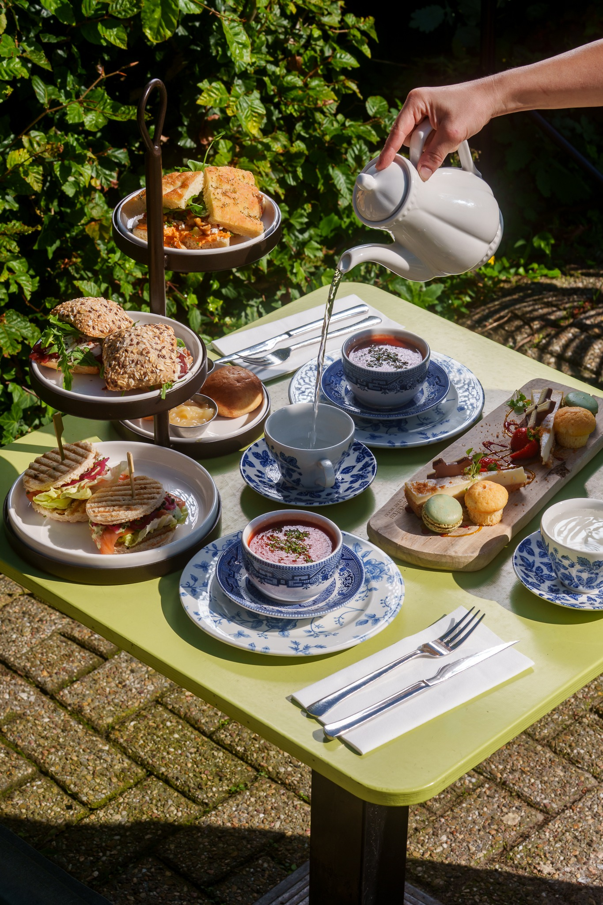
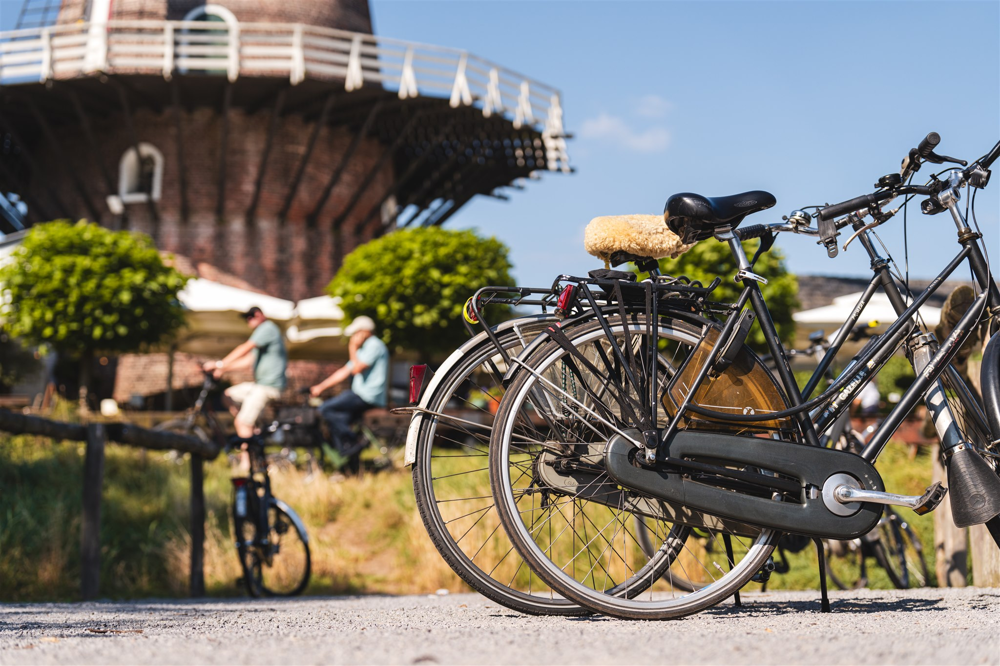
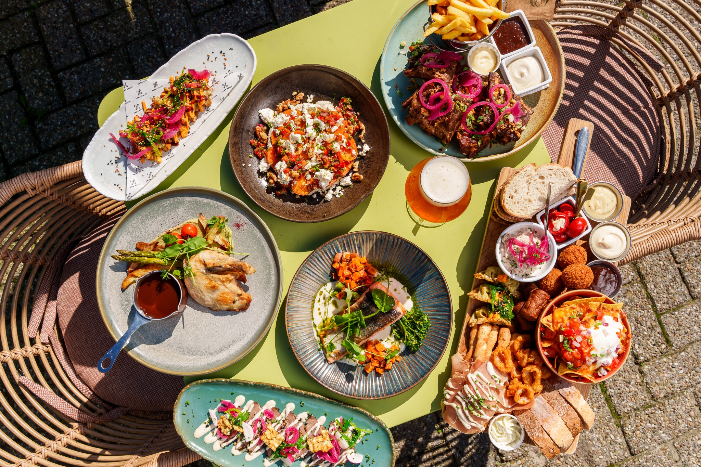
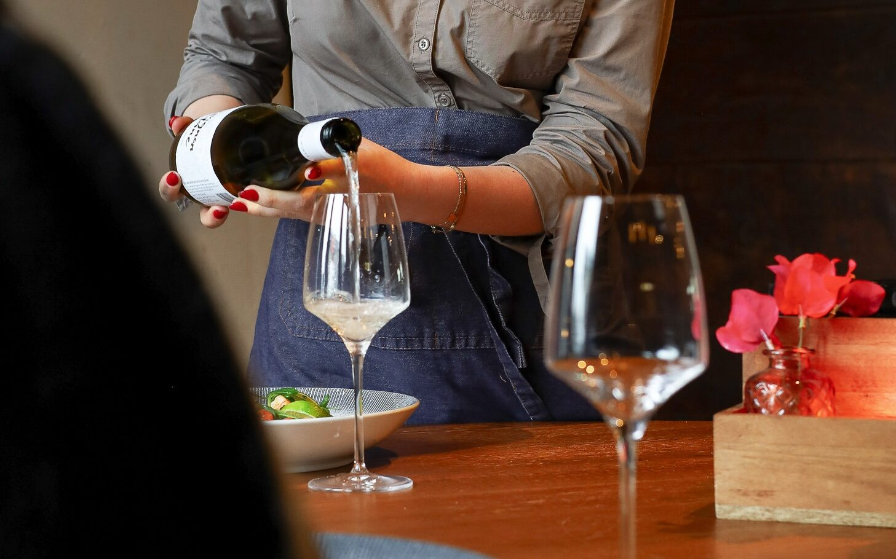
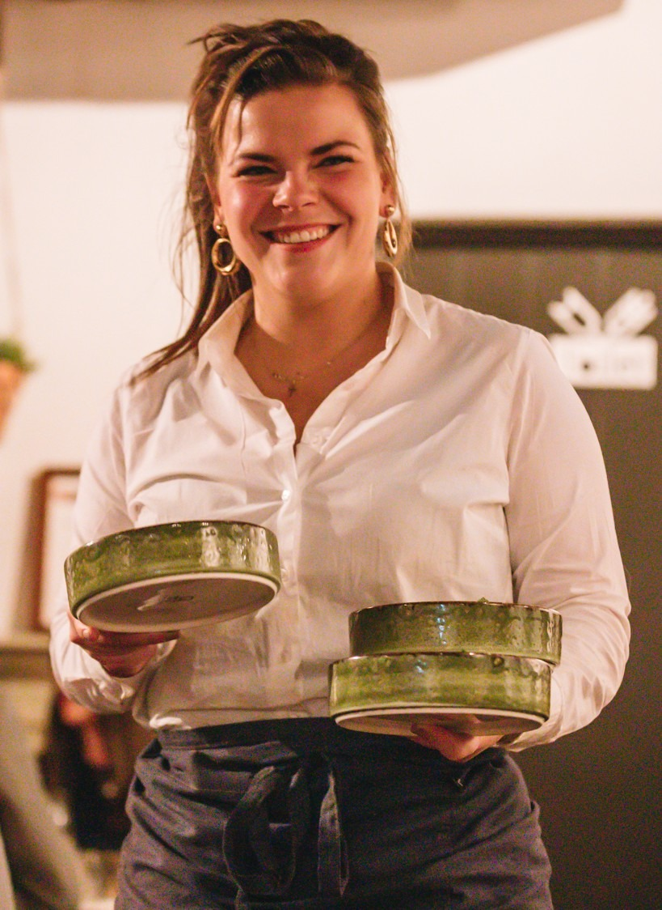
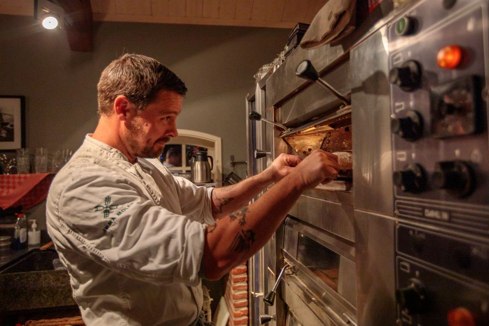
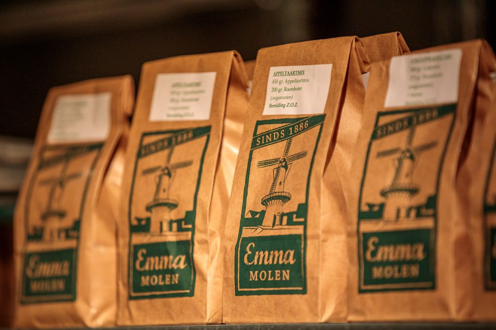
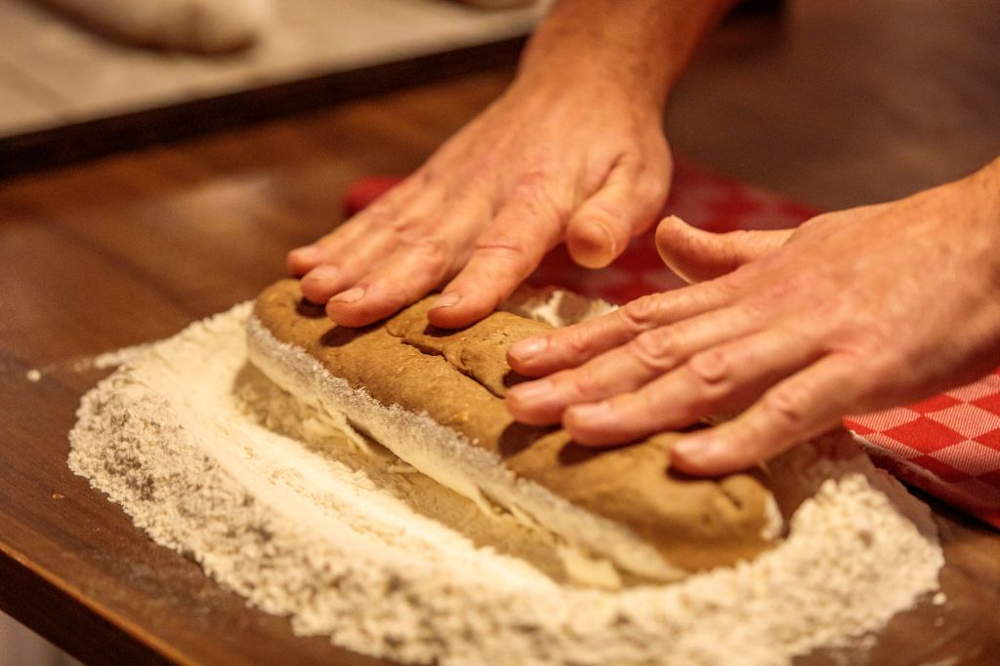
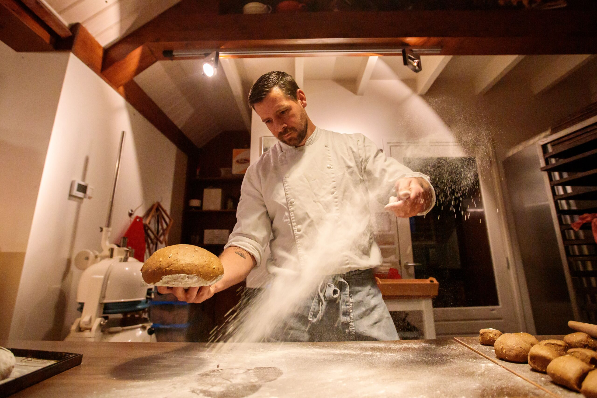
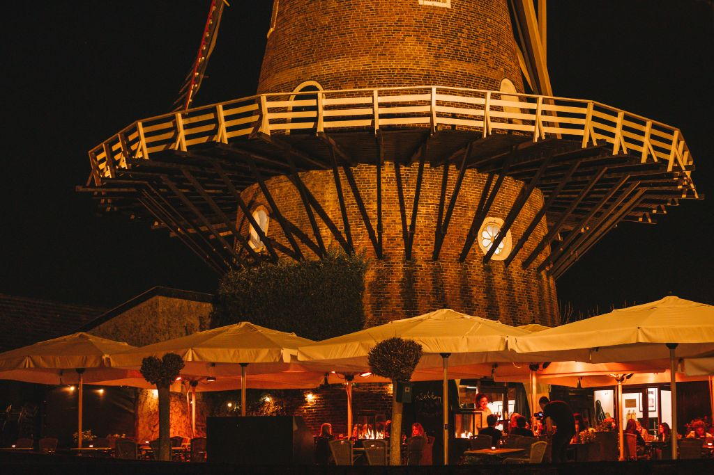

High tea
Onbeperkt thee- of koffie-leuten onder het genot van 3 rondes heerlijke lekkernijen. Leuk voor een verjaardag of een middag met vrienden.
€ 29,50 per persoon
Reserveren
Restaurant Emmamolen en Bakhuys Emma, Sint Jorisstraat 16 in Nieuwkuijk. Lunch, borrel en diner, binnen in de nostalgische molen of op het terras.
Bij Restaurant Emmamolen kun je ouderwets genieten. Van een heerlijk diner of een gezellige borrel. Op ons prachtige terras of binnen in onze nostalgische molen. Start je dag met een lekkere kop koffie met huisgemaakt appelgebak, of kom lunchen met collega's of vrienden. Hier kunt u de hele dag bourgondisch genieten.
Heerlijk genieten in een warme huiskamersfeer: bekijk de menukaart of laat jezelf adviseren door de bediening.


Onbeperkt thee- of koffie-leuten onder het genot van 3 rondes heerlijke lekkernijen. Leuk voor een verjaardag of een middag met vrienden.
€ 29,50 per persoon
Reserveren
Een wijnarrangement: verschillende wijnen met een bijpassend gerecht, per gang gecombineerd. Kies voor 3, 4 of 5 gangen.
Reserveren
Het enthousiaste team van Restaurant Emmamolen staat iedere dag met een glimlach voor je klaar.
Carolien is er vanaf het eerste uur: routinier op de vloer. Die maak je niks wijs!
Evy is er ook vanaf het eerste uur. Iedereen kent 'r, en Evy zelf kent ook iedereen. En al het reilen en zeilen bij de molen!
Evenementen bij de Emmamolen? Houd deze website en onze sociale kanalen in de gaten.

Streekwinkel en bakkerij, met meel uit de eigen molen.
In onze winkel vind je biologische jam, siroop, honing en versgebakken lekkernijen, en vers speltbrood gemaakt van ons eigen meel en de beste oergranen. Verbouwd in de Nieuwkuijkse polder en gemalen in de Emmamolen.
Winkel open: donderdag en vrijdag 09:00 tot 17:00, zaterdag 09:00 tot 16:00. Op feestdagen gesloten.

Zelf (worsten)brood bakken, een rondleiding door de molen of zelfs een schietarrangement in samenwerking met het gilde: het kan bij de Emmamolen.
Donderdag, vrijdag en zaterdag vanaf 10 personen, andere dagen in overleg. Ontvangst op het terras, film in Bakhuys Emma, rondleiding, koffie of thee en een gebakje. Met minder personen betaalt u voor 10.
Donderdag, vrijdag en zaterdag vanaf 8 personen. Rondleiding, broodjes bakken (wit of volkoren), mee naar huis, koffie of thee en een gebakje. Met minder personen betaalt u voor 8.
Vanaf 8 personen. Rondleiding en worstenbroodjes bakken, 10 stuks gaan mee naar huis.
Meer informatie en prijzen: mail molenaar@emmamolen.nl of bel 073 203 20 28.


Het echtpaar Kees en Petra van Buul blies de molen nieuw leven in. Sinds begin 2018 met Lars van de Wiel en Joost van Eijk aan hun zijde. Zij zijn sindsdien verantwoordelijk voor het horecagedeelte van de molen. Gepassioneerd als altijd runnen Kees en Petra de molen en de streekwinkel.
De korenopslag op de eerste en tweede verdieping, de meelzolder op de derde, de molenstenen op de vierde, het luiwerk op de luizolder op de vijfde, en bovenin de kap- en smeerzolder. Een rondleiding regel je via de winkel.

Gratis parkeren op de parkeerplaats voor de Emmamolen.
De hele week geopend vanaf 10:00 uur, voor lunch, borrel en diner. De lunchkaart is dagelijks van 11:00 tot 15:30.
Donderdag en vrijdag 09:00 tot 17:00
Zaterdag 09:00 tot 16:00
Op feestdagen gesloten
Bel 073 203 20 28 of mail reserveringen@emmamolen.nl.
Sint Jorisstraat 16
5253 BL Nieuwkuijk